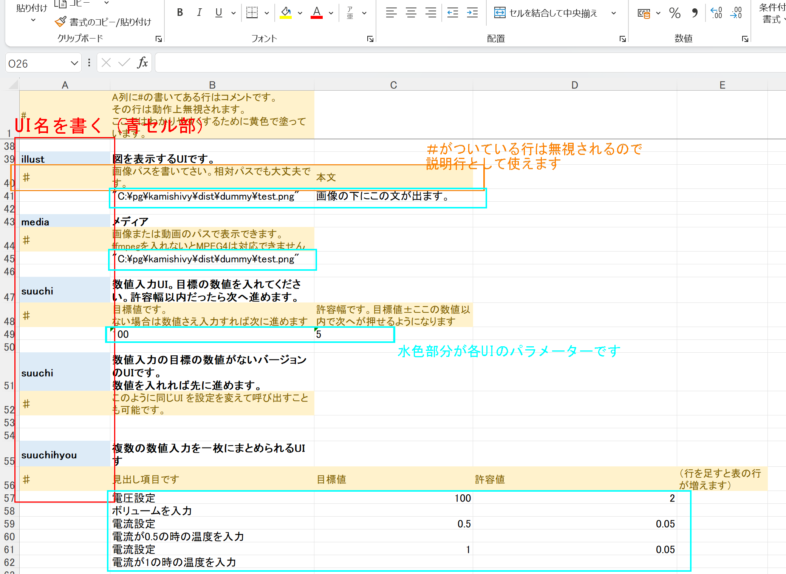
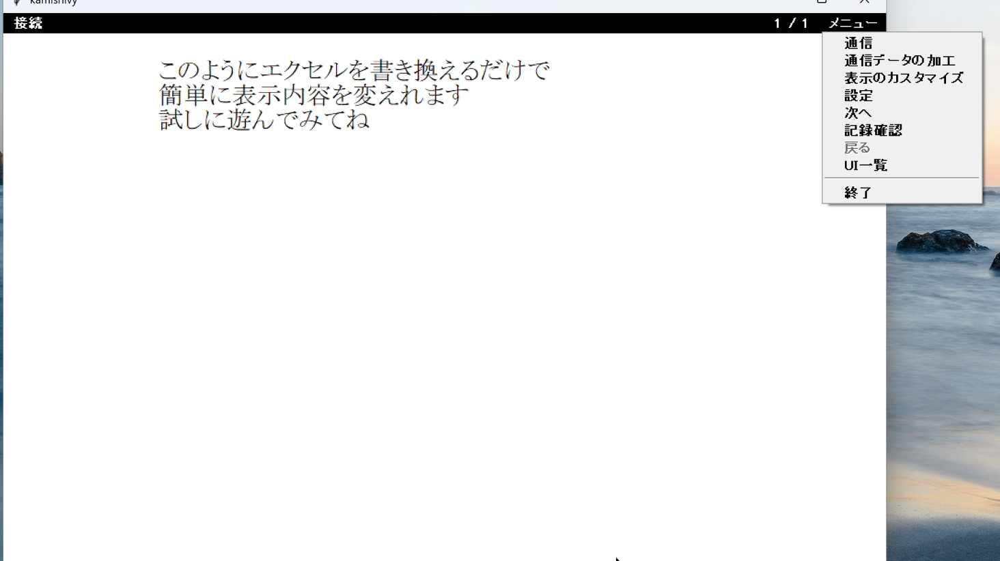

使い方
CUI の書き方
画面の順番と、そこに出す文字は Excel（CUI）に書きます。cui.xlsx が基本です。CSV でも読めます。
プログラムは上から順に読み、1列目の名前の UI を表示します。

CUI の表。A列が UI、B列がタイトル、その下が変数です。
- UI の表示列（A列） … 呼び出す画面の名前です。
checkと書けばui/check.pyが出ます。同じ名前が再登場したら、新しい起動です。 - タイトル（B列） … UI 名の右隣です。画面の先頭に出ます。空なら出しません。
- 変数の置き場 … UI 名の次の行からです。その行の A 列は空けます。B 列以降に、表示する文字や目標値などを書きます。
- ＃について … A 列が
#・＃・♯で始まる行はコメント／見出しで、画面には渡りません。UI 名の直後の♯行は、変数の見出しです。
空行や右端の空マスは読み飛ばします。見やすく隙間を空けて書いて大丈夫です。
UI について
用意してある画面の種類や、自分で足す方法は別ページです。
UI の説明へメニュー
窓の右上の「メニュー」から開けます。見た目の色は、メニューから開く窓には使いません。

右上のメニュー。
一番下の「次へ」は、 UI の設定する条件を満たしたときだけ押せます。(UI が)